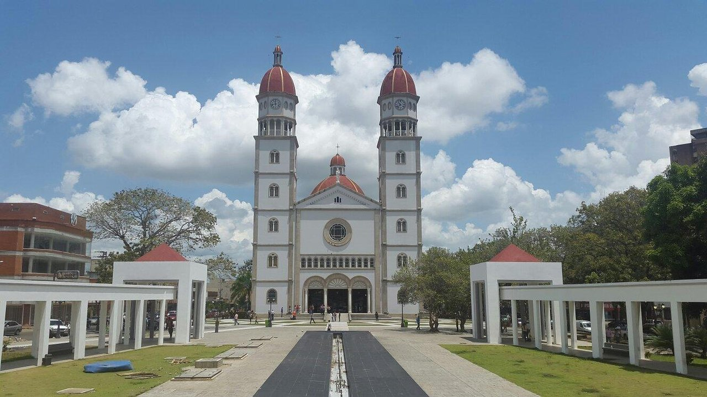

Lugares que voce precisa conhecer. La Cascada
O Shopping La Cascada é o shopimg mais visitado na cidade de Maturin, possui muitas areas para ficar o dia todo se voce quiser, por estar em um ambiente aberto e ter prasas de comidas ele da a sensaçao de tranquilidade e paz para pasear um bom tempo com a sua familia

Catedral de Maturin "nossa senhora do Carmen"
É uma das igrejas máis grandes e melhor decoradas do país, alem da altura da suas cúpulas, é considerada a segunda máis alta de Latinoamérica antecedida pela Basílica de Nossa Senhora de Guadalupe em México.Sua construçao comenzó o 16 de julho de 1959, precisamente o día de Nossa Senhora do Carmen, e foi inaugurada 22 anos depois, o 23 de maio de 1981.
